A temporal machine learning pipeline using engineered lag, trend, and rolling statistics features with XGBoost — benchmarked against classical ML baselines.
What was built, why it matters, and what the numbers say.
Sepsis is a life-threatening response to infection that kills approximately 11 million people worldwide every year. In ICU settings, it develops over hours. A model that flags deterioration 6–12 hours before onset gives clinicians a critical intervention window — but the signal is buried in noisy hourly vitals with a 45:1 class imbalance (only 2.17% of records are septic).
Instead of feeding raw vital signs into a black box, we engineer 70 temporal features — lags, trends, and rolling statistics — that capture how a patient is changing, not just their snapshot. These feed a regularized XGBoost model trained on a strict patient-wise split (no leakage).
Source, structure, and the constraints that shaped downstream design decisions.
The project uses the PhysioNet 2019 Sepsis Challenge dataset — a publicly benchmarked corpus of hourly ICU records from three US hospitals.
Only 2.17% of rows carry a positive sepsis label. A naive model that predicts
“no sepsis” every time would score 97.8% accuracy and
catch zero septic patients. For this reason the project reports
AUROC and AUPRC instead of accuracy, and used
scale_pos_weight during training to compensate.
27 of the 44 raw columns are >80% missing, including every lab result (Lactate, Creatinine, WBC, Platelets, etc.) and the EtCO2 column (100% missing). Imputing these reliably is impossible, so they were dropped and only 16 reliable base columns (vitals + static context) were kept.
From raw hourly vitals to a leakage-free, explainable early-warning model.
Rather than predict “is this patient septic right now?”, the model predicts “will this patient become septic within the next 6 / 12 hours?” Only rows where the patient is currently non-septic are used — a currently septic row is not an early-warning sample.
→ 6h target positive rate: 1.15%
→ 12h target positive rate: 2.14%
For each of the 7 vitals, the pipeline adds:
→ 84 total features (14 base + 70 temporal)
| Model | Target | Key Hyperparameters |
|---|---|---|
| Temporal XGBoost (6h) | Sepsis within 6h | depth=3, lr=0.03, γ=0.1, λ=5.0, early stopping |
| Temporal XGBoost (12h) | Sepsis within 12h | depth=4, lr=0.05, γ=0.1, λ=5.0, early stopping |
Three classical models trained on raw features — the bar the temporal XGBoost must beat.
Each baseline was evaluated with 5-fold GroupKFold cross-validation
grouped by Patient_ID — the same leakage-safe protocol used for the
main model. Training folds were SMOTE-resampled to address imbalance.
| Baseline Model | AUROC | AUPRC | Recall | Precision | F1 |
|---|---|---|---|---|---|
| Logistic Regression + SMOTE | 0.703 ± 0.013 | 0.080 | 0.601 | 0.043 | 0.080 |
| Random Forest + SMOTE | 0.739 ± 0.010 | 0.088 | 0.416 | 0.103 | 0.165 |
| HistGradientBoosting + SMOTE | 0.733 ± 0.012 | 0.088 | 0.367 | 0.116 | 0.176 |
Lowest AUROC (0.703). Its linear decision boundary cannot express “rising HR + falling BP + rising Resp together.” High recall (0.60) but very low precision (0.043).
Highest AUROC among baselines (0.739). Nonlinearity helps, but the model is still limited by seeing only raw snapshot values.
Tied on AUPRC (0.088). Catches only 37% of septic patients at the default threshold.
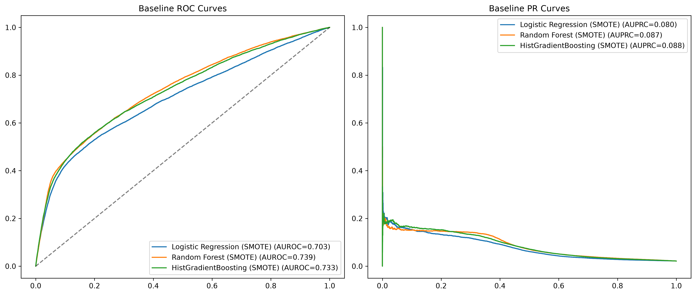
baseline_roc_pr_curves.png not found — run baseline_models_and_cv.ipynb Cell 10'">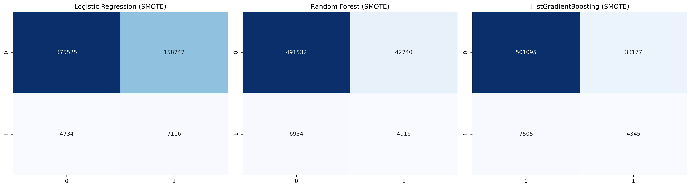
baseline_confusion_matrices.png not found — run baseline_models_and_cv.ipynb Cell 11'">The main contribution: 84 engineered features feeding a regularized gradient booster.
The final model is a regularized XGBoost classifier trained on the full 84-feature matrix (14 base + 70 temporal). Two variants were trained — one for the 6-hour horizon and one for the 12-hour horizon — with early stopping on validation PR-AUC.
| Model | AUROC | AUPRC | Recall | Precision | F1 | Specificity | Brier |
|---|---|---|---|---|---|---|---|
| ⭐ Temporal XGBoost (6h) | 0.8003 | 0.1122 | 0.5865 | 0.0744 | 0.1321 | 0.8382 | 0.1379 |
| ⭐ Temporal XGBoost (12h) | 0.8035 | 0.1153 | 0.6084 | 0.0727 | 0.1298 | 0.8277 | 0.1445 |
The single most important table in the project.
| Model | AUROC | AUPRC |
|---|---|---|
| Logistic Regression + SMOTE | 0.7031 | 0.0803 |
| Random Forest + SMOTE | 0.7391 | 0.0879 |
| HistGradientBoosting + SMOTE | 0.7326 | 0.0880 |
| ⭐ Temporal XGBoost (6h) | 0.8003 | 0.1122 |
| ⭐ Temporal XGBoost (12h) | 0.8035 | 0.1153 |
Under 45:1 imbalance, a model can look good on AUROC while being clinically useless. AUPRC directly measures how well the model identifies rare positives. A random classifier would score AUPRC ≈ 0.0217 (the base rate). The baselines reach 0.080–0.088 (3.7–4× random); Temporal XGBoost reaches 0.112–0.115 — roughly 5× better than random.
How well each model separates septic from non-septic across all thresholds.
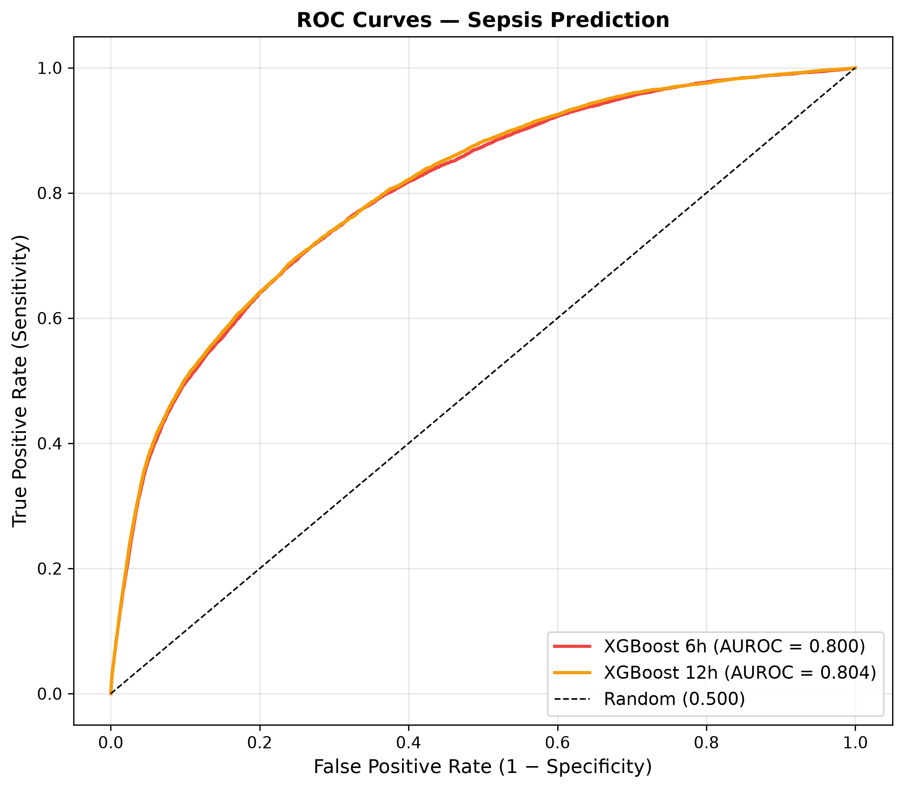
figures_roc_curve.png not found — run model_training.ipynb Cell 75'">Each point on the curve corresponds to a decision threshold. The x-axis is the False Positive Rate (1 − specificity) — the fraction of non-septic patients incorrectly flagged. The y-axis is the True Positive Rate (recall) — the fraction of septic patients correctly caught.
Under 45:1 class imbalance, this is the diagnostic that matters most.
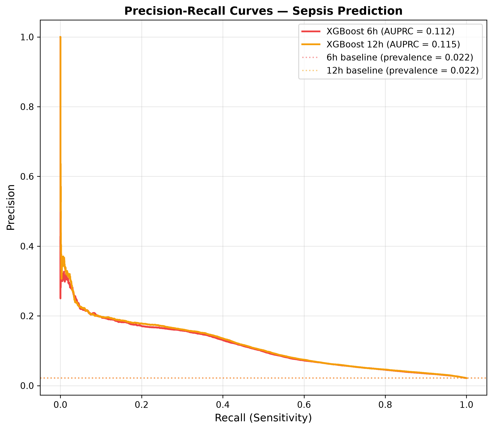
figures_pr_curve.png not found — run model_training.ipynb Cell 76'">The x-axis is Recall — fraction of septic patients caught. The y-axis is Precision — fraction of alerts that are real. A perfect classifier sits in the top-right corner; a random classifier sits at the horizontal prevalence line.
Why 0.5 is the wrong default for this problem, and how the deployed threshold was chosen.
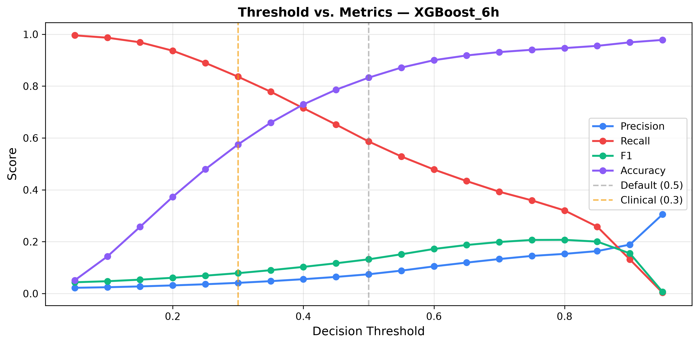
figures_threshold_XGBoost_6h.png not found'">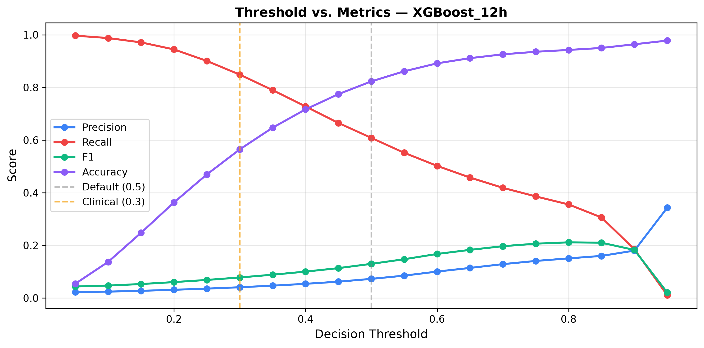
figures_threshold_XGBoost_12h.png not found'">The default decision threshold (0.5) is designed for balanced problems. Because positives are rare here, the model outputs very few probabilities above 0.5. Lowering the threshold catches more septic patients at the cost of more false alarms. The graphs show how each metric responds.
| Metric | Behaviour as threshold ↓ | Reason |
|---|---|---|
| Recall | Rises sharply | Lower bar → more positive predictions → more sepsis caught. |
| Precision | Falls steadily | More true positives, but far more false positives as well. |
| F1 | Peaks at an interior point | Balances precision and recall; optimal point is where F1 is highest. |
| Accuracy | Drops slowly | Negatives dominate (98%), so calling more positives hurts this metric — but accuracy is misleading here. |
Raw prediction counts at the deployed operating threshold.
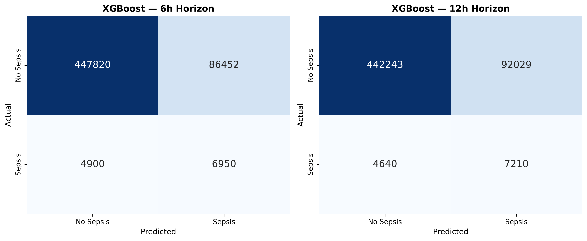
figures_confusion_matrix.png not found — run model_training.ipynb Cell 74'">| Model | TP | FP | TN | FN | Recall | Specificity |
|---|---|---|---|---|---|---|
| Temporal XGBoost (6h) | 6,950 | 86,452 | 447,820 | 4,900 | 0.5865 | 0.8382 |
| Temporal XGBoost (12h) | 7,210 | 92,029 | 442,243 | 4,640 | 0.6084 | 0.8277 |
Each matrix is a 2×2 grid:
A black box is unusable in medicine. SHAP shows exactly what drives each prediction.
SHAP (SHapley Additive exPlanations) is a game-theoretic method that assigns each feature a contribution value for every single prediction. The sum of contributions + base value = the model's log-odds output. This makes the model auditable: for any patient, the model can list exactly which vitals pushed risk up and which pushed it down.
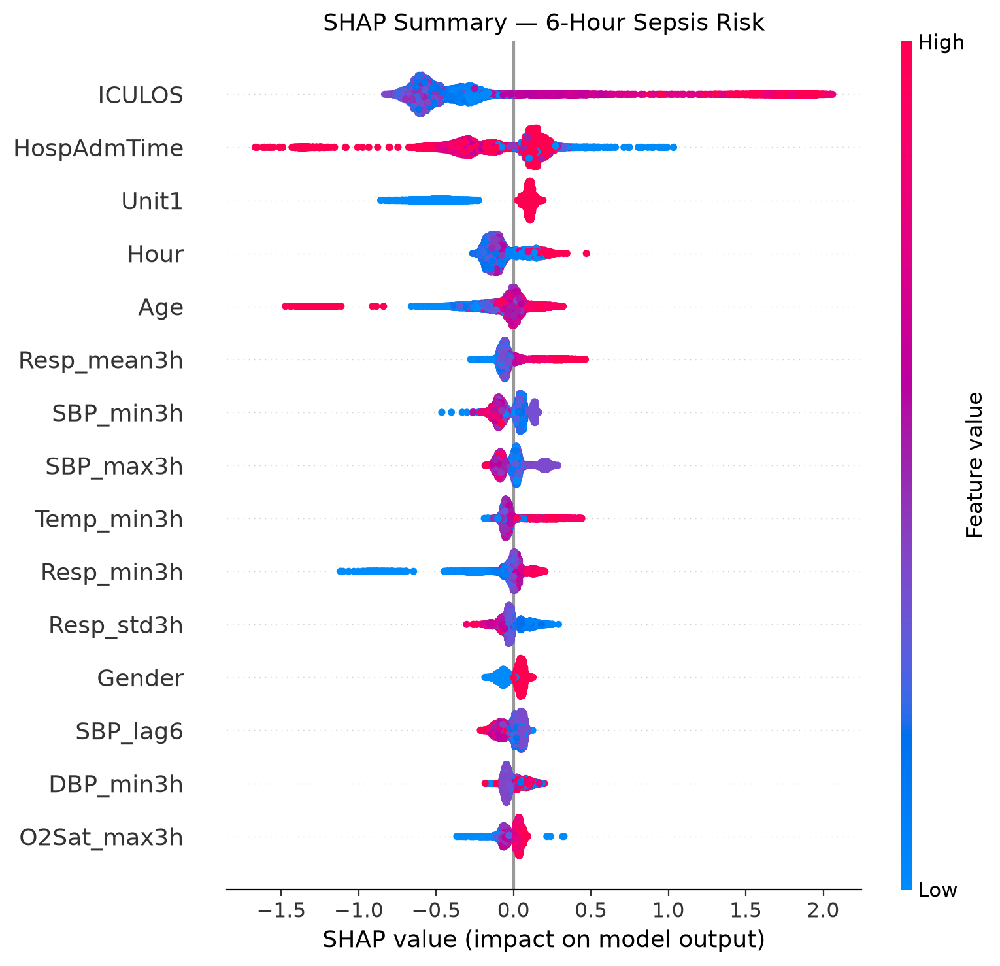
shap_figures/01_summary_6h.png not found — run model_training.ipynb Cell 67'">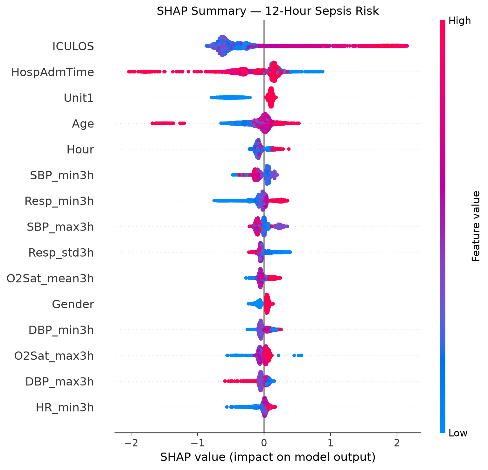
shap_figures/02_summary_12h.png not found'">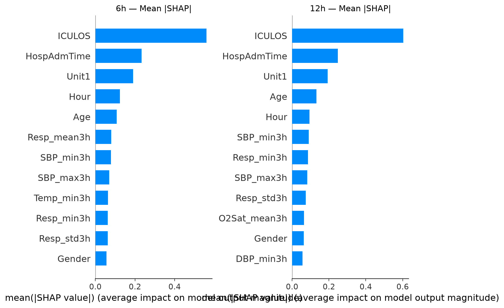
shap_figures/03_bar_comparison.png not found'">All 84 features were grouped into three categories and their mean |SHAP| contributions summed:
| Feature Group | Features | SHAP Contribution | Share |
|---|---|---|---|
| Static context | Age, Gender, Unit1, Unit2, HospAdmTime | 0.630 | 20.4% |
| Time index | Hour, ICULOS | 0.685 | 22.1% |
| Dynamic vitals | HR, O2Sat, Temp, SBP, MAP, DBP, Resp + all lags / changes / rolling stats | 1.779 | 57.5% |
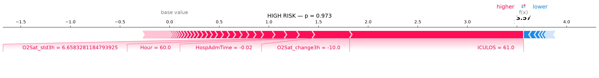
shap_figures/04_force_high.png not found'">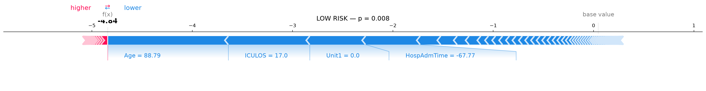
shap_figures/05_force_low.png not found'">The force plots above explain the model's decision for one specific patient. Red arrows (right) push the prediction toward sepsis; blue arrows (left) push it away. The final output is the balance point.
High-risk patient: long ICU stay, low O2 saturation trend, older age — the model flags high risk.
Low-risk patient: short ICU stay, stable vitals, normal O2 saturation — the model flags low risk.
This is the kind of per-patient explanation a clinician could review before acting on an alert — crucial for building trust in the system.
Four models trained on different feature subsets to prove the temporal features are doing real work.
| Feature Subset | AUROC | AUPRC | Recall | F1 |
|---|---|---|---|---|
| Full (84 features) | 0.7646 | 0.1079 | 0.4833 | 0.1416 |
| Dynamic only (77) | 0.6844 | 0.0535 | 0.4565 | 0.0834 |
| Static + time only (7) | 0.6791 | 0.0732 | 0.4234 | 0.0995 |
| No ICULOS + no HospAdmTime | 0.7587 | 0.1017 | 0.4819 | 0.1401 |
The strongest configuration — all feature groups present.
Removing static context (Age, Gender, ICU unit, ICULOS, HospAdmTime) drops AUROC by ~8 points. Static context is informative, but not sufficient alone.
Even without a single vital sign, just knowing ICU length-of-stay, hour, and patient demographics reaches AUROC 0.68. ICULOS alone is remarkably predictive — but the model saturates quickly.
Dropping the strongest static features barely hurts (0.765 → 0.759). This is the crucial result: the model does not depend on ICU length-of-stay to perform well. The dynamic vitals are sufficient.
future_work/ folder.
Explore individual patient predictions and SHAP explanations in the interactive dashboard:
→ Open the Sepsis Early Warning Dashboard